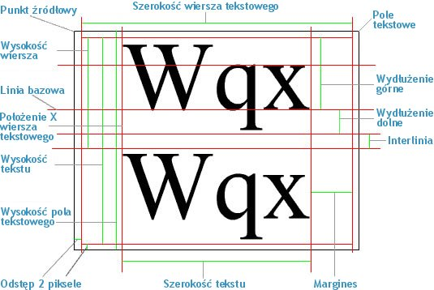

| Pakiet | flash.text |
| Klasa | public class TextLineMetrics |
| Dziedziczenie | TextLineMetrics |
| Wersja języka: | ActionScript 3.0 |
| Wersje środowiska wykonawczego: | AIR 1.0, Flash Player 9, Flash Lite 4 |
flash.text.TextField.getLineMetrics().
Wymiary związane z polem tekstowym zawierającym wiersz tekstowy (na przykład wymiary wysokości pola tekstowego na diagramie) zawiera właściwość flash.text.TextField.
Następujący diagram przedstawia punkty i wymiary dla pola tekstowego oraz wiersza tekstowego zawartego w tym polu:

Powiązane elementy interfejsu API
 Ukryj dziedziczone właściwości publiczne
Ukryj dziedziczone właściwości publiczne Pokaż dziedziczone właściwości publiczne
Pokaż dziedziczone właściwości publiczne| Właściwość | Zdefiniowane przez | ||
|---|---|---|---|
| ascent : Number
Wydłużenie górne tekstu jest to odległość między linią bazową a górną krawędzią wiersza tekstowego (w pikselach). | TextLineMetrics | ||
 | constructor : Object
Odwołanie do obiektu klasy lub funkcji konstruktora, dotyczące danej instancji obiektu. | Object | |
| descent : Number
Wydłużenie dolne tekstu jest to odległość między linią bazową a dolną krawędzią wiersza tekstowego (w pikselach). | TextLineMetrics | ||
| height : Number
Wysokość tekstu w zaznaczonych wierszach (niekoniecznie całego tekstu), wyrażona w pikselach. | TextLineMetrics | ||
| leading : Number
Interlinia jest to wielkość odstępu między wierszami tekstu. | TextLineMetrics | ||
| width : Number
Szerokość tekstu w zaznaczonych wierszach (niekoniecznie całego tekstu), wyrażona w pikselach. | TextLineMetrics | ||
| x : Number
Współrzędna x pierwszego znaku (od lewej strony, w pikselach). | TextLineMetrics | ||
| Metoda | Zdefiniowane przez | ||
|---|---|---|---|
TextLineMetrics(x:Number, width:Number, height:Number, ascent:Number, descent:Number, leading:Number)
Tworzy obiekt TextLineMetrics. | TextLineMetrics | ||
|
Wskazuje, czy dla obiektu zdefiniowano określoną właściwość. | Object | |
|
Wskazuje, czy instancja klasy Object należy do łańcucha prototypów obiektu określonego jako parametr. | Object | |
|
Wskazuje, czy określona właściwość istnieje i jest przeliczalna. | Object | |
|
Ustawia dostępność właściwości dynamicznej używanej w pętlach. | Object | |
|
Zwraca ciąg reprezentujący obiekt — sformatowany zgodnie z konwencjami właściwymi dla ustawień regionalnych. | Object | |
|
Zwraca ciąg reprezentujący określony obiekt. | Object | |
|
Zwraca pierwotną wartość dla określonego obiektu. | Object | |
ascent | właściwość |
public var ascent:Number| Wersja języka: | ActionScript 3.0 |
| Wersje środowiska wykonawczego: | AIR 1.0, Flash Player 9, Flash Lite 4 |
Wydłużenie górne tekstu jest to odległość między linią bazową a górną krawędzią wiersza tekstowego (w pikselach). Sprawdź wartość „Wydłużenie górne” na diagramie w ogólnym opisie dla tej klasy.
Powiązane elementy interfejsu API
descent | właściwość |
public var descent:Number| Wersja języka: | ActionScript 3.0 |
| Wersje środowiska wykonawczego: | AIR 1.0, Flash Player 9, Flash Lite 4 |
Wydłużenie dolne tekstu jest to odległość między linią bazową a dolną krawędzią wiersza tekstowego (w pikselach). Sprawdź wartość „Wydłużenie dolne” na diagramie w ogólnym opisie dla tej klasy.
Powiązane elementy interfejsu API
height | właściwość |
public var height:Number| Wersja języka: | ActionScript 3.0 |
| Wersje środowiska wykonawczego: | AIR 1.0, Flash Player 9, Flash Lite 4 |
Wysokość tekstu w zaznaczonych wierszach (niekoniecznie całego tekstu), wyrażona w pikselach. Wysokość wiersza tekstowego nie obejmuje wysokości odstępu. Sprawdź wartość „Wysokość wiersza” na diagramie w ogólnym opisie dla tej klasy.
Powiązane elementy interfejsu API
leading | właściwość |
public var leading:Number| Wersja języka: | ActionScript 3.0 |
| Wersje środowiska wykonawczego: | AIR 1.0, Flash Player 9, Flash Lite 4 |
Interlinia jest to wielkość odstępu między wierszami tekstu. Sprawdź wartość „Interlinia” na diagramie w ogólnym opisie dla tej klasy.
Powiązane elementy interfejsu API
width | właściwość |
public var width:Number| Wersja języka: | ActionScript 3.0 |
| Wersje środowiska wykonawczego: | AIR 1.0, Flash Player 9, Flash Lite 4 |
Szerokość tekstu w zaznaczonych wierszach (niekoniecznie całego tekstu), wyrażona w pikselach. Szerokość wiersza tekstowego nie jest równa szerokości pola tekstowego. Szerokość wiersza tekstowego stanowi szerokość pola tekstowego pomniejszoną o 4 piksele szerokości odstępu (po 2 piksele po każdej stronie). Sprawdź wartość „Szerokość wiersza tekstowego” na diagramie w ogólnym opisie dla tej klasy.
Powiązane elementy interfejsu API
x | właściwość |
public var x:Number| Wersja języka: | ActionScript 3.0 |
| Wersje środowiska wykonawczego: | AIR 1.0, Flash Player 9, Flash Lite 4 |
Współrzędna x pierwszego znaku (od lewej strony, w pikselach). Ta wartość uwzględnia margines, wcięcie (jeśli istnieje) oraz wartości dla szerokości odstępu. Sprawdź wartość „Położenie X wiersza tekstowego” na diagramie w ogólnym opisie dla tej klasy.
Powiązane elementy interfejsu API
TextLineMetrics | () | Konstruktor |
public function TextLineMetrics(x:Number, width:Number, height:Number, ascent:Number, descent:Number, leading:Number)| Wersja języka: | ActionScript 3.0 |
| Wersje środowiska wykonawczego: | AIR 1.0, Flash Player 9, Flash Lite 4 |
Tworzy obiekt TextLineMetrics. Obiekt TextLineMetrics zawiera informacje o wymiarach wiersza w polu tekstowym. Obiekty tej klasy są zwracane przez metodę flash.text.TextField.getLineMetrics().
Informacje o właściwościach w kontekście przedstawia diagram w ogólnym opisie tej klasy.
Parametryx:Number — Położenie lewej krawędzi pierwszego znaku w pikselach.
| |
width:Number — Szerokość tekstu w zaznaczonych wierszach (niekoniecznie całego tekstu) wyrażona w pikselach.
| |
height:Number — Wysokość tekstu w zaznaczonych wierszach (niekoniecznie całego tekstu) wyrażona w pikselach.
| |
ascent:Number — Odległość mierzona od linii bazowej do górnej krawędzi wiersza wyrażona w pikselach.
| |
descent:Number — Odległość mierzona od linii bazowej do dolnej krawędzi wiersza wyrażona w pikselach.
| |
leading:Number — Wartość odległości między wierszami tekstu w pionie.
|
Powiązane elementy interfejsu API
- Utwórz właściwość typu TextField o nazwie
label. - Konstruktor wywołuje metodę
configureAssets(), która:- Ustawia wyrównanie stołu montażowego do górnego lewego rogu bez skalowania.
- Tworzy nowy obiekt TextField o nazwie
label. - Włącza tło obiektu
labeli ustawia kolor biały. - Umożliwia rozmieszczenie w obiekcie
labeltekstu w wielu wierszach za pomocą automatycznego zawijania. - Przypisuje wyniki wywołania metody
getLabelText()do właściwościtextobiektulabel. MetodagetLabelText()tworzy zmienną typu XML i przypisuje ją do węzła XML o nazwiebodyzapełnianego długą instrukcją. - Dodaje obiekt
labeldo wyświetlanej listy za pomocą metodyaddChild().
- Następnie dodawana jest metoda o nazwie
resizeHandler(), która nasłuchuje wykonanych na stole montażowym zdarzeńresize. Podczas każdej zmiany wielkości okna programu Flash Player, zostaje wywołane zdarzenieRESIZEi uruchamiane są następujące metody:- Metoda
draw(), która odpowiada za umieszczenie obiektulabelna środku stołu montażowego i otoczenie go 10-pikselowym buforem. - metoda
setTimeout(), która po krótkiej chwili wywołuje metodęshowMetrics(). Ta krótka chwila jest potrzebna na ukończenie zdarzeniaRESIZEi przerysowanie stołu montażowego, po czym możliwa jest aktualizacja wymiarów wiersza. - Metoda
showMetrics()przypisuje zmienną TextLineMetrics o nazwiemetricsdo wyników wywołania funkcjigetLineMetrics(), a następnie ta zmienna zostaje przekazana do nowej instancji LineMetricsReader o nazwiereader. Następnie obydwie zmienne wykorzystuje się w wywołaniach metodytrace()w celu wydruku pierwszego (i jedynego) wiersza obiektulabeloraz informacji instancji LineMetricsReader za pomocą metodytoString().
- Metoda
- Konstruktor wywołuje pojedynczą dyspozycję zdarzenia
resizew celu poprawnego narysowania obiektulabelpodczas pierwszego ładowania pliku SWF.
package {
import flash.display.Sprite;
import flash.display.StageAlign;
import flash.display.StageScaleMode;
import flash.events.*;
import flash.text.TextField;
import flash.text.TextLineMetrics;
import flash.utils.setTimeout;
public class TextLineMetricsExample extends Sprite {
private var gutter:int = 10;
private var label:TextField;
public function TextLineMetricsExample() {
configureAssets();
configureListeners();
resizeHandler(new Event(Event.RESIZE));
}
private function showMetrics():void {
var metrics:TextLineMetrics = label.getLineMetrics(0);
var reader:LineMetricsReader = new LineMetricsReader(metrics);
trace("lineText: " + label.getLineText(0));
trace("metrics: " + reader);
}
private function configureAssets():void {
stage.align = StageAlign.TOP_LEFT;
stage.scaleMode = StageScaleMode.NO_SCALE;
label = new TextField();
label.background = true;
label.backgroundColor = 0xFFFFFF;
label.multiline = true;
label.wordWrap = true;
label.text = getLabelText();
addChild(label);
}
private function configureListeners():void {
stage.addEventListener(Event.RESIZE, resizeHandler);
}
private function resizeHandler(event:Event):void {
draw();
setTimeout(showMetrics, 100);
}
private function draw():void {
label.x = gutter;
label.y = gutter;
label.width = stage.stageWidth - (gutter * 2);
label.height = stage.stageHeight - (gutter * 2);
}
private function getLabelText():String {
var text:XML = <body>The Flex product line enables developers to build rich Internet applications that blend the responsiveness of desktop software, the cross-platform reach of the web, and the expressiveness of the Flash Platform.</body>
return text.toString();
}
}
}
import flash.text.TextLineMetrics;
class LineMetricsReader {
private var metrics:TextLineMetrics;
public function LineMetricsReader(metrics:TextLineMetrics) {
this.metrics = metrics;
}
public function toString():String {
return "[TextLineMetrics ascent:" + metrics.ascent
+ ", descent:" + metrics.descent
+ ", leading:" + metrics.leading
+ ", width:" + metrics.width
+ ", height:" + metrics.height
+ ", x:" + metrics.x
+ "]";
}
}
Tue Jun 12 2018, 12:06 PM Z